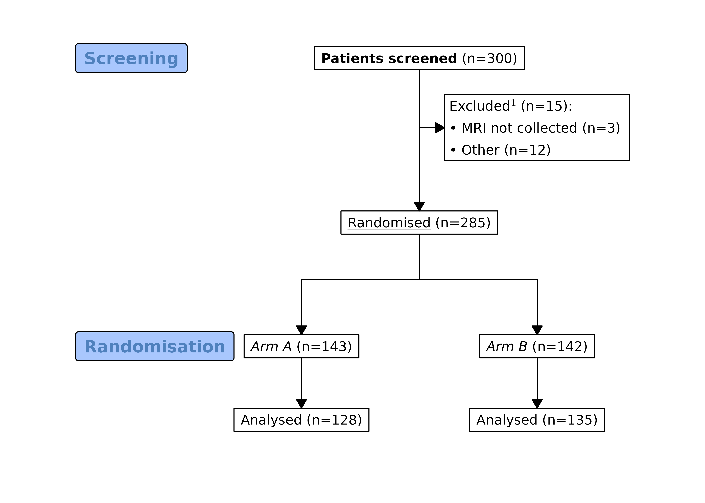
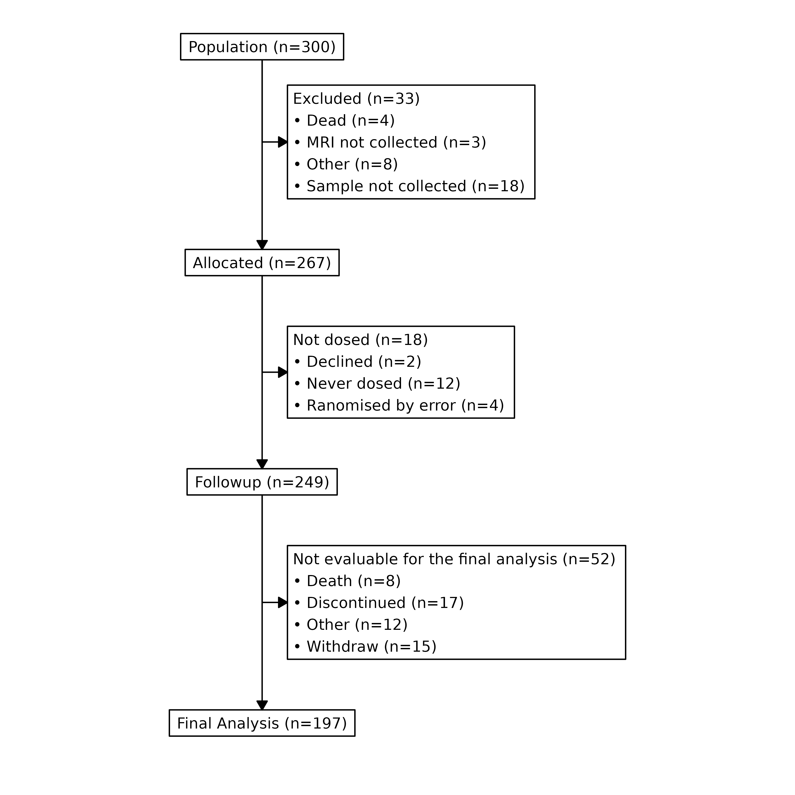
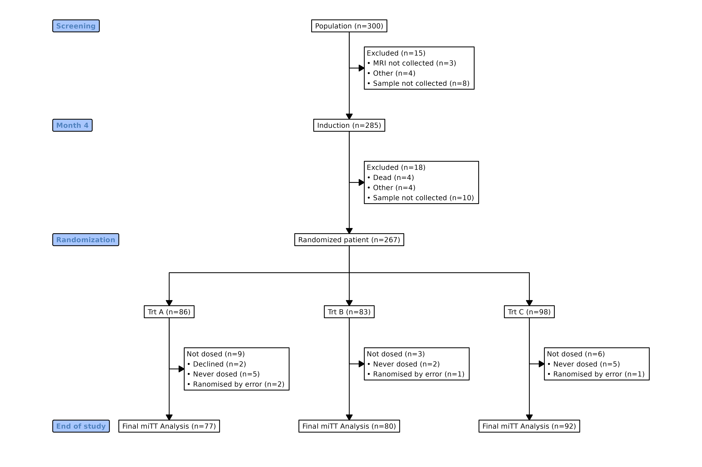
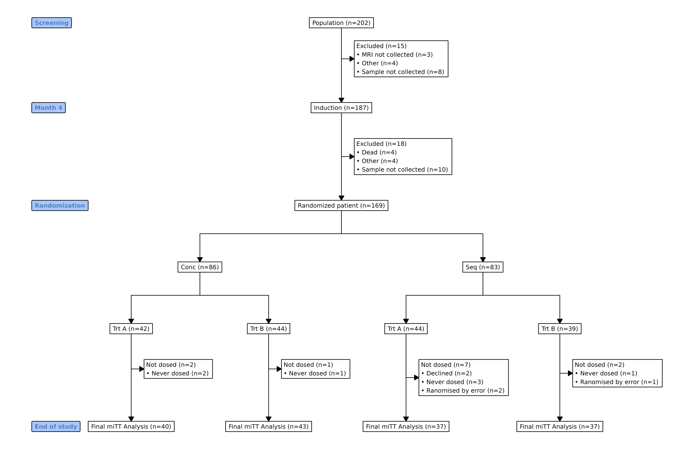
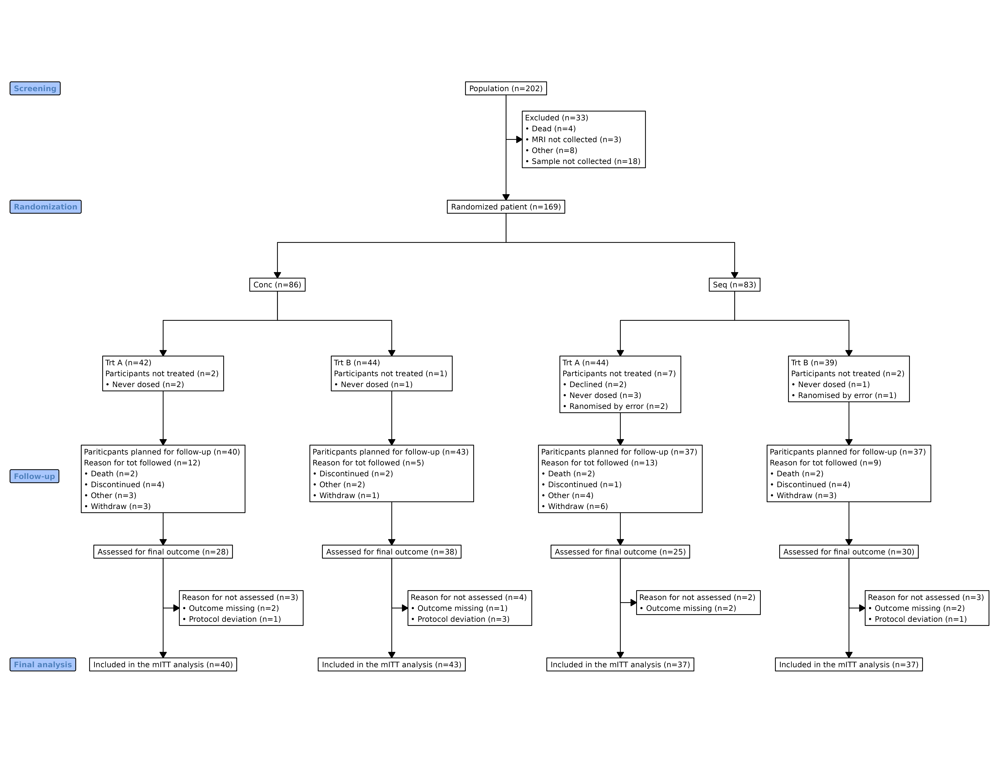
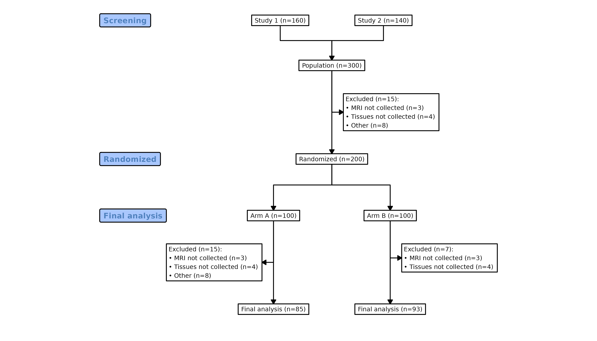
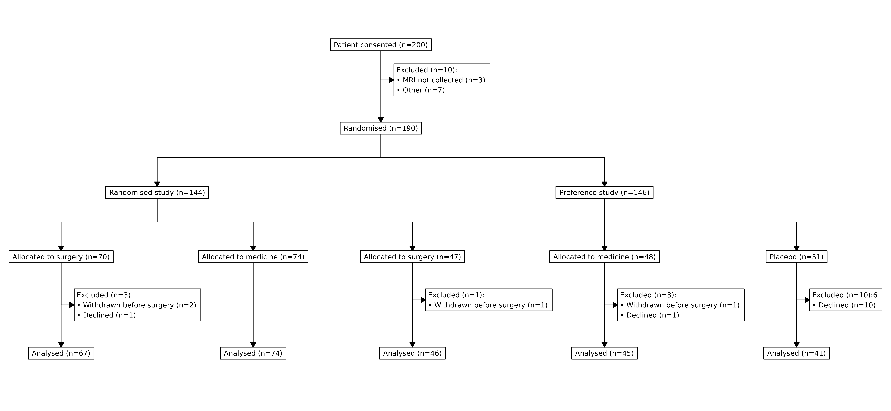
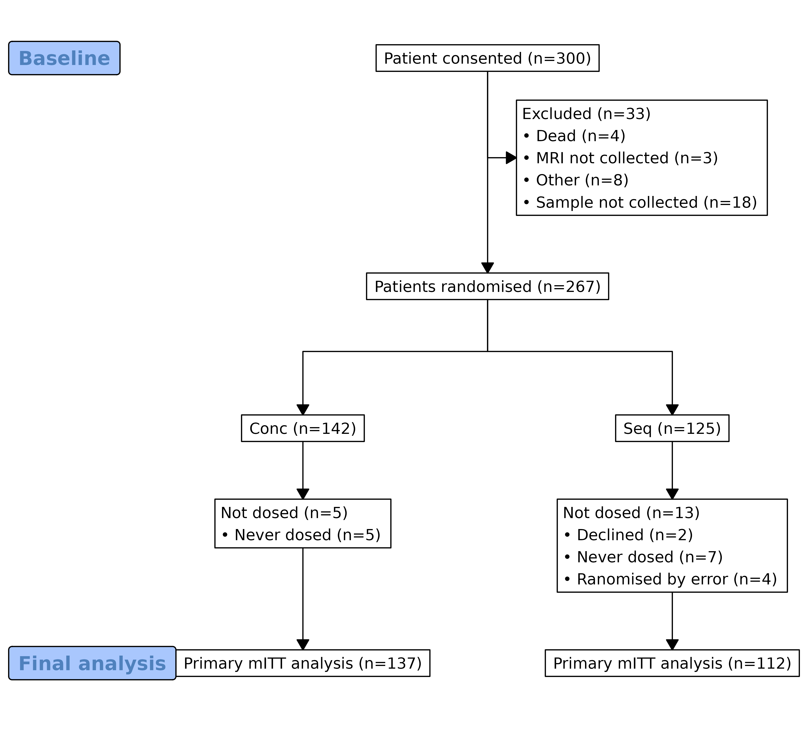

The goal of this package is to make it easy to create CONSORT diagrams for the transparent reporting of participant allocation in randomized, controlled clinical trials. This is done by creating a standardized disposition data, and using this data as the source for the creation a standard CONSORT diagram. Human effort by supplying text labels on the node can also be achieved. Below is the illustration of the CONSORT diagram creating process for the two different methods.
Prepare test data
In a clinical research, we have a participants disposition data. One column is the participants’ ID, and the following columns indicating the status of the participants at different stage of the study. One can easily derive the number of participants at different stage by counting the number of participants on-study excluding the participants who are excluded.
Description
This function developed to populate consort diagram automatically.
But to do so, a population disposition data should be prepared. The
following data is prepared for demonstration provided in the package.
The data can be loaded with data(dispos.data), the
variables in this table is explained below:
-
trialno: Participants ID of the participants -
exclusion1, exclusion2: Exclusion reason before and after induction -
induction: Participants ID of the participants who are included in the induction phase, an extra treatment before randomisation. -
exclusion: Exclusion reason before randomisation, including before and after induction -
arm, arm3: Arms pariticipants randomised to. -
sbujid_dosed: Participants ID of the participants who had at least one dose of the protocol treatment. -
subjid_notdosed: Reason for participants not dosed. -
followup: Participants ID planned for follow-up. -
lost_followup: Reason for participants not dosed. -
assessed: Participants ID participants attended assessment. -
no_value: Reason for participants missing final assessment. -
mitt: Participants ID included in the mITT analysis.
#> trialno exclusion1 induction exclusion2 exclusion arm arm3 sbujid_dosed
#> 1 1086 <NA> 1086 <NA> <NA> Conc Trt C 1086
#> 2 1418 <NA> 1418 <NA> <NA> Seq Trt B 1418
#> 3 1502 <NA> 1502 <NA> <NA> Seq Trt C 1502
#> 4 1846 <NA> 1846 <NA> <NA> Seq Trt A 1846
#> 5 1303 <NA> 1303 <NA> <NA> Seq Trt A 1303
#> 6 1838 <NA> 1838 <NA> <NA> Conc Trt B 1838
#> subjid_notdosed followup lost_followup assessed no_value mitt
#> 1 <NA> 1086 <NA> 1086 <NA> 1086
#> 2 <NA> 1418 <NA> 1418 <NA> 1418
#> 3 <NA> 1502 <NA> 1502 Protocol deviation 1502
#> 4 <NA> 1846 Death NA <NA> 1846
#> 5 <NA> 1303 Withdraw NA <NA> 1303
#> 6 <NA> 1838 <NA> 1838 <NA> 1838Usage
Basic logic:
- The vertical node are the number of patients in the current node, no dropout reasons of inclusion reasons should be provided.
- Side box is only used for the drop outs. It include information about the number of patients excluded and reasons.
- Any participants with exclusion reasons will not be included in the next vertical node box after excluded. So the subject id can be used multiple times to indicate how many patients left in the current node.
- The node labels, for example visit number or phase, can only horizontally align to a vertical main nodes, not an exclusion box.
- If more than 2 treatment allocation is present, all the exclusion box after the allocation will be aligned to the right
At each stage, number of non-missing values will be
counted. Set kickoff_sidebox=TRUE to remove the
observations counted in the side box in the remaining nodes.
Self-generating function
To generate consort diagram with data.frame, one should prepare a
disposition data.frame.
consort_plot(data,
orders,
side_box,
allocation = NULL,
labels = NULL,
cex = 0.8,
text_width = NULL,
widths = c(0.1, 0.9))-
data: Dataset prepared above -
orders: A named vector or a list, names as the variable and values as labels in the box. The order of the diagram will be based on this. Variables listed here, but not included in other parameters will calculate the number of non-missing values. A list can be provided with multiple variables in each list element and these variables will be stack into a single node. The side box should only have 1 variable. -
side_box: Variable vector, appeared as side box in the diagram. The next box will be count the number of non-missing values, so users need to make sure this is correct. The pariticpants id variable can be used multiple times, since only the number of non-missing is calculated for the vertical box. -
allocation: Name of the grouping/treatment variable (optional), the diagram will split into branches on this variables. -
labels: Named vector, names is the location of the vertical node excluding the side box. The position location should plus 1 after the allocation variables if the allocation is defined. -
kickoff_sidebox: kickoff of the observation from the data with following a side box. -
cex: Multiplier applied to font size, Default is 0.6 -
text_width: A positive integer giving the target column for wrapping lines in the output.
Manual
Functions are mainly in three categories, main box, side box and
label box. Others include building function. These are the functions
used by the self generating function. These box functions require the
previous node and text label. - add_box: add main box, no
previous nodes should be provided if this is the first node. -
add_side_box: add exclusion box. - add_split:
add allocation box, all nodes will be split into groups. The label text
for this node and following nodes should be a vector with a length
larger than 1. - add_label_box: add visiting or phasing
label given a reference node. - build_grid: you don’t need
this unless you want the grob object. -
build_grviz: you don’t need this unless you want the
Graphviz code.
Plotting engine
The package supports two plotting engines: grid
(grid package) and Graphviz. The default was
grid, plot(g) (assuming g is the
consort plot object) will use the grid to draw the plot.
The coordinates are calculated internally, one can simply use
build_grid(g) to get a built grob object. This
means you can do use patchwork package to combine different
plots. You can use the example below to add title and footnotes.
library(patchwork)
wrap_elements(build_grid(g)) + plot_annotation(
title = 'Consort diagram',
subtitle = 'Flow chart of the XX study',
caption = 'Disclaimer: None of these plots are insightful'
)Although many efforts have been made to draw the plot as easy as
possible, you may still find some plots are difficult to draw. You may
not be happy about the final output or want the plot in a
svg format to be used in the websites. You can simply
plot(g, grViz = TRUE) to draw the plot with
Graphviz. You need to install DiagrammeR
package to do so. If you want to do some twicking to the plot, you can
use build_grviz(g) to extract the dot file and
edit. You can use Rstudio to render the plot or other tools
you prefer. Use the example below to dump the dot file.
cat(build_grviz(g), file = "consort.gv")Some default settings
The package has some default settings for the line width, color,
arrow type and length. These can be easily changed with
set_consort_defaults(). For example, you can set
set_consort_defaults(arrow_gp = gpar(col = "red", lwd = 2))
to change the arrow graphical parameters. Use
get_consort_defaults() to view current settings. The
default parameters are below:
get_consort_defaults()
#> Consort diagram default settings:
#>
#> arrow_gp : gpar(col = "black", lwd = 1)
#> txt_gp : gpar(cex = 1, col = "black")
#> box_gp : gpar(fill = "white")
#> label_txt_gp : gpar(col = "#4F81BD", cex = 1, font = "bold")
#> label_box_gp : gpar(fill = "#A9C7FD")
#> arrow_length : 0.1
#> arrow_type : "closed"
#> pad_u : 3
#> bullet : "•"
#> parse_markup : FALSESee ?set_consort_defaults for what each option does.
The gpar() options are merged with the existing
defaults, so you only need to specify the properties you want to change.
The package defaults can be restored with
init_consort_defaults():
set_consort_defaults(arrow_gp = gpar(col = "red", lwd = 2))
# ... draw diagram ...
init_consort_defaults() # restoreText formatting with markup
Node labels support a lightweight markup syntax for text formatting.
This works with both the grid and Graphviz
rendering backends. Markup parsing is off by default;
enable it with:
set_consort_defaults(parse_markup = TRUE)The following styles are available:
| Markup | Result |
|---|---|
**text** |
Bold |
*text* |
Italic |
^{text} |
Superscript |
_{text} |
Subscript |
__text__ |
Underline |
Markup can be mixed with plain text and line breaks (\n)
as usual.
Note: the markup may not be perfect. There is known issue with Graphviz that the combination of bold and normal text may not render correctly and it may overlap with the surrounding text. If you encounter this issue, you can try to add some extra space around the styled text.
Example
library(grid)
set_consort_defaults(txt_gp = gpar(cex = 0.8), parse_markup = TRUE)
g <- add_box(txt = "**Patients screened** (n=300)") |>
add_side_box(txt = "Excluded^{1} (n=15):\n\u2022 MRI not collected (n=3)\n\u2022 Other (n=12)") |>
add_box(txt = "__Randomised__ (n=285)") |>
add_split(txt = c("*Arm A* (n=143)", "*Arm B* (n=142)")) |>
add_box(txt = c("Analysed (n=128)", "Analysed (n=135)")) |>
add_label_box(txt = c("1" = "Screening", "3" = "Randomisation"))
plot(g)
The same diagram can be rendered with Graphviz:
plot(g, grViz = TRUE)Formatting is applied per-segment, so you can combine styles within a
single label — for example
"**Enrolled** (n=300)\n*p* < 0.05^{1}" renders
“Enrolled” in bold, “p” in italic, and “1” as a superscript footnote
marker.
Plain text without any markup is rendered exactly as before.
Working example (self generation)
Single arm
out <- consort_plot(data = dispos.data,
orders = c(trialno = "Population",
exclusion = "Excluded",
trialno = "Allocated",
subjid_notdosed = "Not dosed",
followup = "Followup",
lost_followup = "Not evaluable for the final analysis",
mitt = "Final Analysis"),
side_box = c("exclusion", "subjid_notdosed", "lost_followup"),
cex = 0.9)
plot(out)
Multiple phase and multiple arms
g <- consort_plot(data = dispos.data,
orders = c(trialno = "Population",
exclusion1 = "Excluded",
induction = "Induction",
exclusion2 = "Excluded",
arm3 = "Randomized patient",
subjid_notdosed = "Not dosed",
mitt = "Final miTT Analysis"),
side_box = c("exclusion1", "exclusion2", "subjid_notdosed"),
allocation = "arm3",
labels = c("1" = "Screening", "2" = "Month 4",
"3" = "Randomization",
"5" = "End of study"),
cex = 0.7)
plot(g)
Multiple stratification with node stack
In some cases, two level randomisation/stratification is desired. A typical case is the factorial design. Simply provide two allocation variables, but more than two splits are not supported.
Here is a simple example on how to do it.
df <- dispos.data[!dispos.data$arm3 %in% "Trt C",]
g <- consort_plot(data = df,
orders = c(trialno = "Population",
exclusion1 = "Excluded",
induction = "Induction",
exclusion2 = "Excluded",
arm = "Randomized patient",
arm3 = "",
subjid_notdosed = "Not dosed",
mitt = "Final miTT Analysis"),
side_box = c("exclusion1", "exclusion2", "subjid_notdosed"),
allocation = c("arm", "arm3"),
labels = c("1" = "Screening", "2" = "Month 4",
"3" = "Randomization",
"6" = "End of study"),
cex = 0.7)
plot(g)
In a more general cases, one may want to keep the count inside the vertical box instead of excluding. In this cases, one can provide multiple variables in a list. The first variable will simply be counted, the remaining variables will be itemised.
# We will exclude one arm to avoid too many arms.
df <- dispos.data[!dispos.data$arm3 %in% "Trt C",]
p <- consort_plot(data = df,
orders = list(c(trialno = "Population"),
c(exclusion = "Excluded"),
c(arm = "Randomized patient"),
# The following two variables will be stacked together
c(arm3 = "", # Should not provide a value to show the actual arm
subjid_notdosed="Participants not treated"),
# The following two variables will be stacked together
c(followup = "Pariticpants planned for follow-up",
lost_followup = "Reason for tot followed"),
c(assessed = "Assessed for final outcome"),
c(no_value = "Reason for not assessed"),
c(mitt = "Included in the mITT analysis")),
side_box = c("exclusion", "no_value"),
allocation = c("arm", "arm3"), # Two level randomisation
kickoff_sidebox = FALSE,
labels = c("1" = "Screening", "2" = "Randomization",
"5" = "Follow-up", "7" = "Final analysis"),
cex = 0.7)
plot(p)
Working example (human effort)
The previous is to easily generate a consort diagram based on a disposition data, here we show how to create a consort diagram by providing the label text manually.
Provide text
library(grid)
# Might want to change some settings
set_consort_defaults(txt_gp = gpar(cex = 0.8))
txt0 <- c("Study 1 (n=160)", "Study 2 (n=140)")
txt1 <- "Population (n=300)"
txt1_side <- "Excluded (n=15):\n\u2022 MRI not collected (n=3)\n\u2022 Tissues not collected (n=4)\n\u2022 Other (n=8)"
# supports pipeline operator
g <- add_box(txt = txt0) |>
add_box(txt = txt1) |>
add_side_box(txt = txt1_side) |>
add_box(txt = "Randomized (n=200)") |>
add_split(txt = c("Arm A (n=100)", "Arm B (n=100)")) |>
add_side_box(txt = c("Excluded (n=15):\n\u2022 MRI not collected (n=3)\n\u2022 Tissues not collected (n=4)\n\u2022 Other (n=8)",
"Excluded (n=7):\n\u2022 MRI not collected (n=3)\n\u2022 Tissues not collected (n=4)")) |>
add_box(txt = c("Final analysis (n=85)", "Final analysis (n=93)")) |>
add_label_box(txt = c("1" = "Screening",
"3" = "Randomized",
"4" = "Final analysis"))
plot(g)
Missing nodes and multiple split
There might be some cases that the nodes will be missing, this can be
handled as well. You can also have multiple splits, but multiple splits
for the grid hasn’t been implemented yet. You can use
plot(g, grViz = TRUE) to produce the consort plot.
g <- add_box(txt = c("Study 1 (n=8)", "Study 2 (n=12)", "Study 3 (n=12)"))
g <- add_box(g, txt = "Included All (n=20)")
g <- add_side_box(g, txt = "Excluded (n=7):\n\u2022 MRI not collected (n=3)")
g <- add_box(g, txt = "Randomised")
g <- add_split(g, txt = c("Arm A (n=143)", "Arm B (n=142)"))
g <- add_box(g, txt = c("", "From Arm B"))
g <- add_box(g, txt = "Combine all")
# Length needs to be the same as previous one, use a list here.
g <- add_split(g, txt = list(c("Process 1 (n=140)", "Process 2 (n=140)",
"Process 3 (n=142)")))
plot(g, grViz = TRUE)Two-level stratification
Some studies may first stratify patients then randomise, a factorial design for example. This will require two-level stratification. One can simply provide a list of the same length of the previous node after a split. More than two splits are not supported.
g <- add_box(txt = "Patient consented (n=200)")
g <- add_side_box(g, txt = "Excluded (n=10):\n\u2022 MRI not collected (n=3)\n\u2022 Other (n=7)")
g <- add_box(g, txt = "Randomised (n=190)")
g <- add_split(g, txt = c("Randomised study (n=144)", "Preference study (n=146)"))
# Provide a list here
g <- add_split(g, txt = list(c("Allocated to surgery (n=70)",
"Allocated to medicine (n=74)"),
c("Allocated to surgery (n=47)",
"Allocated to medicine (n=48)",
"Placebo (n=51)")))
g <- add_side_box(g, txt = c("Excluded (n=3):\n\u2022 Withdrawn before surgery (n=2)\n\u2022 Declined (n=1)",
"",
"Excluded (n=1):\n\u2022 Withdrawn before surgery (n=1)",
"Excluded (n=3):\n\u2022 Withdrawn before surgery (n=1)\n\u2022 Declined (n=1)",
"Excluded (n=10):6\n\u2022 Declined (n=10)"),
side = rep("right", 5))
g <- add_box(g, txt = c("Analysed (n=67)", "Analysed (n=74)",
"Analysed (n=46)", "Analysed (n=45)", "Analysed (n=41)"))
plot(g)
Using disposition table
set_consort_defaults(txt_gp = gpar(cex = 0.8))
dispos.data$arm <- factor(dispos.data$arm)
txt <- gen_text(dispos.data$trialno, label = "Patient consented")
g <- add_box(txt = txt)
txt <- gen_text(dispos.data$exclusion, label = "Excluded", bullet = TRUE)
g <- add_side_box(g, txt = txt)
g <- add_box(g, txt = gen_text(dispos.data$arm, label = "Patients randomised"))
txt <- gen_text(dispos.data$arm)
g <- add_split(g, txt = txt)
# Exclude subjects
dispos.data <- dispos.data[is.na(dispos.data$exclusion), ]
txt <- gen_text(split(dispos.data[,c("subjid_notdosed")], dispos.data$arm),
label = "Not dosed", bullet = TRUE)
g <- add_box(g, txt = txt, just = "left")
txt <- gen_text(split(dispos.data$mitt, dispos.data$arm),
label = "Primary mITT analysis")
g <- add_box(g, txt = txt)
g <- add_label_box(g, txt = c("1" = "Baseline",
"5" = "Final analysis"))
plot(g)
For Shiny and HTML
Although all the efforts has been made to precisely calculate the
coordinates of the nodes, it is not very accurate due to limit of my own
knowledge. But you can utilize the DiagrammeR to
produce plots for Shiny and HTML by setting grViz = TRUE in
plot. You can get Graphviz code with
build_grviz of the plot. In addition, use DiagrammeRsvg
and rsvg save plot
in various formats.
plot(g, grViz = TRUE)Use with Quarto
Quarto has native support for embedding Graphviz diagrams. You can plot the flowchart without any printing method.
Saving plot
In order to export the plot to fit a page properly, you need to
provide the width and height of the output plot. You might need to try
different width and height to get a satisfying plot.You can use R basic
device destination for the output. Below is how to save a plot in
png format:
# save plots
png("consort_diagram.png", width = 29,
height = 21, res = 300, units = "cm", type = "cairo")
plot(g)
dev.off() Or you can use ggplot2::ggsave function to save the plot
object:
ggplot2::ggsave("consort_diagram.pdf", plot = build_grid(g))Or save with DiagrammeRsvg
and rsvg to
png or pdf